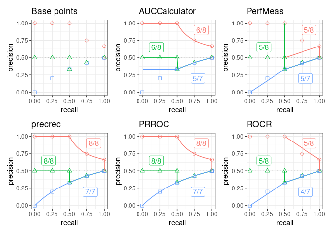

The aim of the prcbench package is to provide a testing workbench for evaluating precision-recall curves under various conditions. It contains integrated interfaces for the following five tools. It also contains predefined test data sets.
| Tool | Language | Link |
|---|---|---|
| precrec | R | Tool web site, CRAN |
| ROCR | R | Tool web site, CRAN |
| PRROC | R | CRAN |
| AUCCalculator | Java | Tool web site |
| PerfMeas | R | CRAN |
Disclaimer: prcbench was originally develop to help our precrec library in order to provide fast and accurate calculations of precision-recall curves with extra functionality.
Accuracy evaluation of precision-recall curves
prcbench uses pre-defined test sets to help evaluate the accuracy of precision-recall curves.
-
create_toolset: creates objects of different tools for testing (5 different tools) -
create_testset: selects pre-defined data sets (c1, c2, and c3) -
run_evalcurve: evaluates the selected tools on the simulation data -
autoplot: shows the results withggplot2andpatchwork
## Load library
library(prcbench)
## Plot base points and the result of 5 tools on pre-defined test sets (c1, c2, and c3)
toolset <- create_toolset(c("precrec", "ROCR", "AUCCalculator", "PerfMeas", "PRROC"))
testset <- create_testset("curve", c("c1", "c2", "c3"))
scores1 <- run_evalcurve(testset, toolset)
autoplot(scores1, ncol = 3, nrow = 2)
Running-time evaluation of precision-recall curves
prcbench helps create simulation data to measure computational times of creating precision-recall curves.
-
create_toolset: creates objects of different tools for testing -
create_testset: creates simulation data -
run_benchmark: evaluates the selected tools on the simulation data
## Load library
library(prcbench)
## Run benchmark for auc5 (5 tools) on b10 (balanced 5 positives and 5 negatives)
toolset <- create_toolset(set_names = "auc5")
testset <- create_testset("bench", "b10")
res <- run_benchmark(testset, toolset)
print(res)| testset | toolset | toolname | min | lq | mean | median | uq | max | neval |
|---|---|---|---|---|---|---|---|---|---|
| b10 | auc5 | AUCCalculator | 2.33 | 2.63 | 3.03 | 2.86 | 3.58 | 3.75 | 5 |
| b10 | auc5 | PerfMeas | 0.10 | 0.10 | 0.14 | 0.11 | 0.13 | 0.25 | 5 |
| b10 | auc5 | precrec | 6.75 | 8.57 | 11.66 | 9.92 | 16.16 | 16.91 | 5 |
| b10 | auc5 | PRROC | 0.23 | 0.23 | 0.27 | 0.23 | 0.25 | 0.41 | 5 |
| b10 | auc5 | ROCR | 2.34 | 2.45 | 2.65 | 2.69 | 2.82 | 2.96 | 5 |
Documentation
Introduction to prcbench – a package vignette that contains the descriptions of the functions with several useful examples. View the vignette with
vignette("introduction", package = "prcbench")in R.Help pages – all the functions including the S3 generics have their own help pages with plenty of examples. View the main help page with
help(package = "prcbench")in R.
Installation
CRAN
install.packages("prcbench")Dependencies
AUCCalculator requires a Java runtime environment (>= 6) if AUCCalculator needs to be evaluated.
GitHub
You can install a development version of prcbench from our GitHub repository.
devtools::install_github("evalclass/prcbench")-
Make sure you have a working development environment.
Windows: Install Rtools (available on the CRAN website).
Mac: Install Xcode from the Mac App Store.
Linux: Install a compiler and various development libraries (details vary across different flavors of Linux).
Install
devtoolsfrom CRAN withinstall.packages("devtools").Install
prcbenchfrom the GitHub repository withdevtools::install_github("evalclass/prcbench").
Troubleshooting
microbenchmark
microbenchmark does not work on some OSs. prcbench uses system.time when microbenchmark is not available.
rJava
- Some OSs require en extra configuration step after rJava installation.
- JDKs
- JDKs for macOS
- JRI support on macOS Big Sur – see this Stack Overflow thread.
install.packages("rJava", configure.args="--disable-jri")Citation
Precrec: fast and accurate precision-recall and ROC curve calculations in R
Takaya Saito; Marc Rehmsmeier
Bioinformatics 2017; 33 (1): 145-147.
External links
Classifier evaluation with imbalanced datasets – our web site that contains several pages with useful tips for performance evaluation on binary classifiers.
The Precision-Recall Plot Is More Informative than the ROC Plot When Evaluating Binary Classifiers on Imbalanced Datasets – our paper that summarized potential pitfalls of ROC plots with imbalanced datasets and advantages of using precision-recall plots instead.